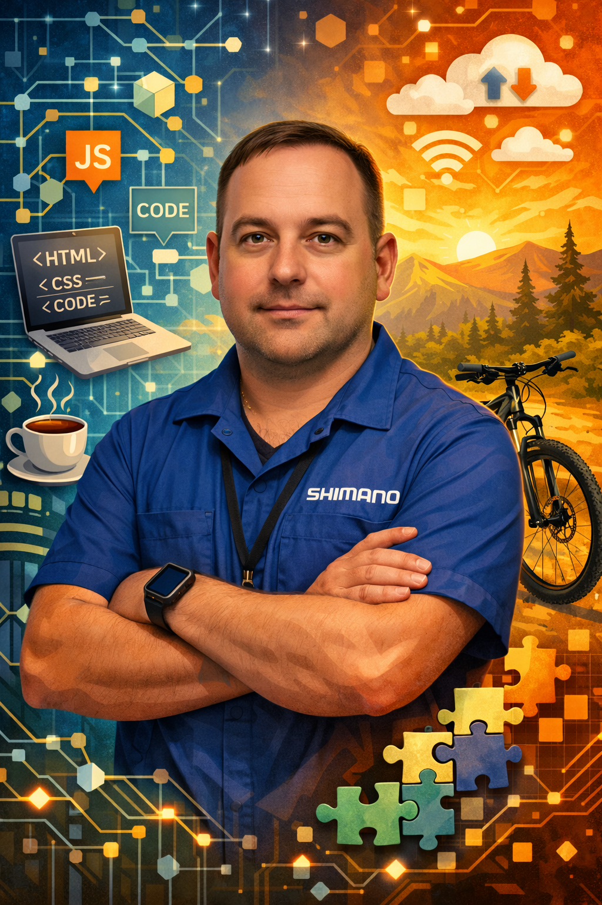

Precíz
szakember,
három területen
Shimano T.E.C. certificált kerékpárszerelő, webfejlesztő és SAS programozó vagyok. Amit csinálok, azt jól csinálom — legyen az egy kerékpár, egy weboldal vagy egy adatelemzési megoldás.


Ahol a technika
találkozik a kóddal.
Főállásban Shimano certificált kerékpárszerelőként dolgozom — ahol a precizitás nem opcionális, hanem alapkövetelmény. Ez a szemlélet hatja át minden más munkámat is.
Mellékállásban webfejlesztéssel és SAS programozással foglalkozom. Szeretem, ha egy projekt nemcsak működik, hanem értéket is teremt.
Miben segíthetek?
Shimano Service Center szintű, professzionális kerékpár karbantartás és javítás. Általános szervíztől a versenykerékpár optimalizálásig.
Modern, reszponzív weboldalak és alkalmazások fejlesztése. Tiszta kód, gyors betöltés, egyedi design — egyetlen HTML-től a Node.js backendig.
Adatelemzési megoldások, automatizált riportok és statisztikai programok fejlesztése SAS platformon.